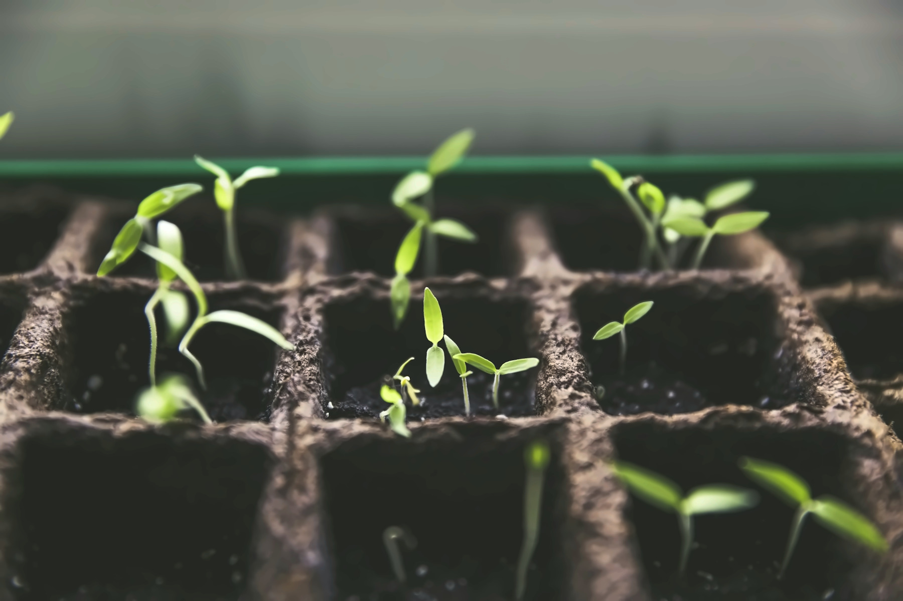

01 / НаправлениеОзеленение и посадка
Подбор и посадка деревьев, кустарников, хвойных и декоративных растений. Подскажем, с чего начать и какие условия участка учесть.
Обсудить задачу ↗Подберём направление под задачу, сезон и территорию. GREENHOUS развивает сервис и стремится заслужить доверие качеством каждого выполненного заказа. Стоимость не публикуем — её подтвердит оператор.

01 / НаправлениеПодбор и посадка деревьев, кустарников, хвойных и декоративных растений. Подскажем, с чего начать и какие условия участка учесть.
Обсудить задачу ↗Комплексное преображение территории, устройство газонов и расчистка участков. Состав работ и последовательность согласуем до начала.
Обсудить задачу ↗Обрезка деревьев и кустарников, обработка растений и сезонный уход. Объём и удобный график обсудит оператор.
Обсудить задачу ↗Хвойные и декоративные растения для частных и общественных пространств. Актуальное наличие и стоимость уточняйте у оператора.
Обсудить задачу ↗Уборка снега, очистка крыш, удаление сосулек и борьба с гололёдом. Состав работ и возможность выезда оператор подтвердит после уточнения объекта.
Обсудить задачу ↗Обсудим особенности территории и предложим подходящий формат работ.
Обсудить задачу ↗